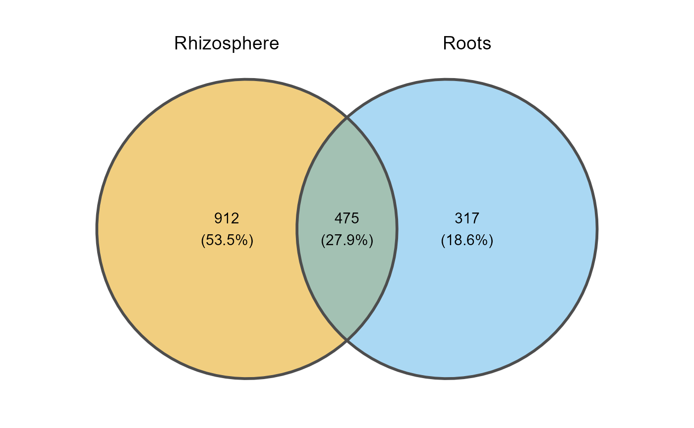
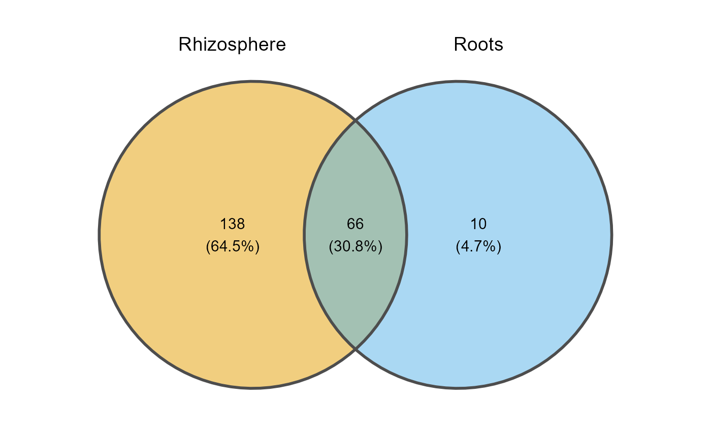
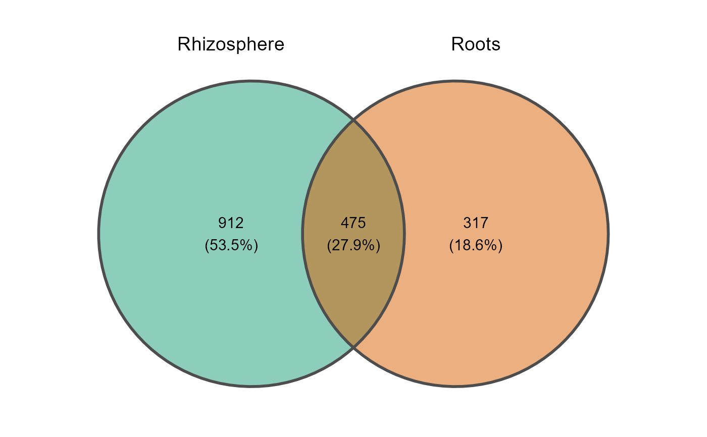

Creates a Venn diagram of the taxa shared between groups of samples, with ggvenn or ggVennDiagram.
Usage
venn_plot(
table,
metadata,
merge_by,
selected_samples = NULL,
min_prevalence = 0,
title = NULL,
method = "ggvenn",
group_colors = NULL,
save_table = FALSE,
table_filename = "venn_taxa_sets.txt"
)Arguments
- table
A data frame with taxa in rows and samples in columns. The last column must be named
taxonomy, containing full taxonomic strings.- metadata
A data frame containing sample metadata. Its first column must hold the sample IDs (the column names of
table).- merge_by
Character. Name of the column in
metadatathat defines the groups (one set of taxa per group).- selected_samples
Optional character vector of the sample IDs to use. If
NULL(default), all samples are used.- min_prevalence
Numeric (0-1). Minimum fraction of the samples of a group where a taxon must be present to count it in that group. Default
0(present in at least one sample).- title
Character. Plot title.
NULL(default) shows no title.- method
Character. Package used to draw the Venn diagram:
"ggvenn"(default) or"ggVennDiagram". Case-insensitive.- group_colors
Optional character vector of colors, one per group, named after the groups or in their order. If
NULL(default), the colorblind-friendly Okabe-Ito palette is used.- save_table
Logical. If
TRUE, saves the taxa of each group (long format) as a tab-delimited file. DefaultFALSE.- table_filename
Character. Name or path of the saved file (used when
save_table = TRUE). Default"venn_taxa_sets.txt".
Examples
table_path <- system.file("extdata", "tabla_bacteria.txt", package = "MicroBioMeta")
table <- read.delim(table_path, row.names = 1, check.names = FALSE)
metadata_path <- system.file("extdata", "metadata_bacteria.txt", package = "MicroBioMeta")
metadata <- read.delim(metadata_path, check.names = FALSE)
venn_plot(
table = table,
metadata = metadata,
merge_by = "Location",
min_prevalence = 0
)

## Filtering taxa by prevalence
venn_plot(
table = table,
metadata = metadata,
merge_by = "Location",
min_prevalence = 0.2
)

## Custom colors
venn_plot(
table = table,
metadata = metadata,
merge_by = "Location",
min_prevalence = 0,
group_colors = c("#1B9E77", "#D95F02")
)
